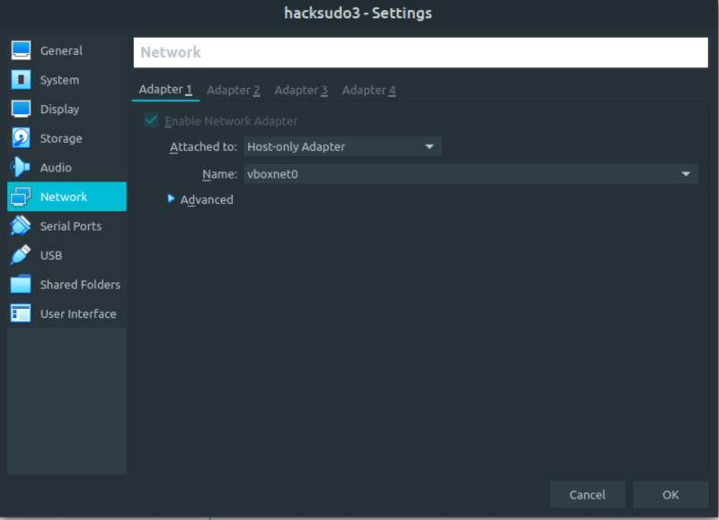
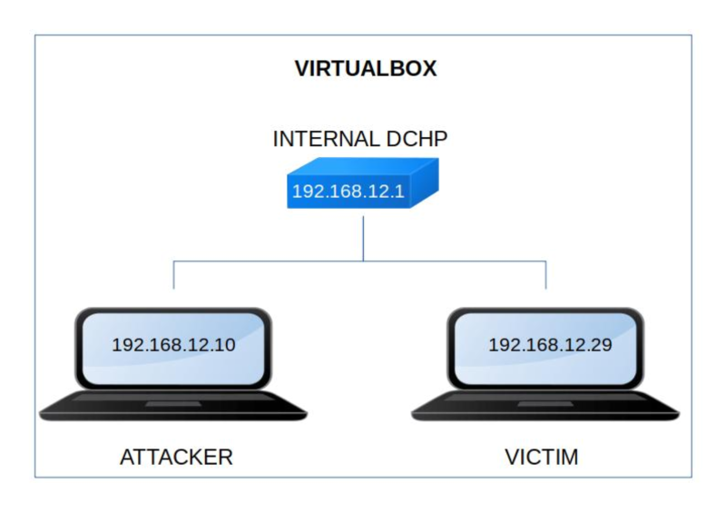

Hacksudo: 3
▸ Hacksudo: 3
▸ 1. Scan Network
▸ 2. Finding Services and Ports
▸ 3. Enumerate
▸ 3.1 Webserver with Gobuster
▸ 3.2 Command injection
▸ 4. Explotiation
▸ 4.1 Get user credentials
▸ 4.2 Connect via SSH (First flag)
▸ 5. Privilege Escalation (Second flag)
Difficulty: Easy.
Flag: 2 flags.
Learning:
• Reconnaissance
Scan Network
Find services
• Enumerate
Files and directories with Gobuster
SQL command injection
• Exploitation
Get user credentials
Connect via SSH
• Privilege Escalation
Enumerate file capabilies with getcap
• Download (Mirror): https://download.vulnhub.com/hacksudo/hacksudo3.zip
• Download (Torrent): https://download.vulnhub.com/hacksudo/hacksudo3.zip.torrent
Install the machine on VirtualBox:
1. Download the file and extract it.
2. On Virtualbox choose File->Import Appliance.
3. Select the file “ova”.
4. Accept to import.


Watch your Machine IP.
$ ifconfig
Output:

Diagram
